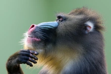

新世界猴被分类在小目———阔鼻下目（Platyrrhini）中，旧世界猴（猴总科 Cercopithecoidea）则是狭鼻小目（Catarrhini）的一部分，这个目也包括猿。和新世界的猴子比起来，旧世界猴反而更接近猿。黑猩猩、长臂猿等在非正式场合也常被称为猴，但其实生物学家并不认为它们是猴。有些猴种类的名字里有 " 猿 "，这是因为它们的特征类似猿
分子证据表明灵长类起源于白垩纪末期，但这个记录尚未得到完全证实。科学家相信最早的猴子或者说灵长类应该是一种似松鼠的小型动物。大家把目光放到了更猴形类（plesiadapiforms）的身上，这些动物证明是起源于古新世。然而牙齿等方面的特征让人们最终认为它们不是灵长类的祖先，而是灵长类的近亲，一些情况下它们被正式归于灵长目中。后来经过研究认为，真正没有争议的原始灵长类包括了始镜猴类 （omomyids），兔猴型类（adapiforms）和眼镜猴类（tasiids）。而且灵长类的起源地认为是在非洲和亚洲，在两个大陆上的古新世地层中陆续报道了很多可能的灵长类，尽管标本都是牙齿且难于确认。
目前可以确认的最古老灵长类或者说世界上最早的猴子应当是阿特拉斯猴（Altiatlasius），根据是摩洛哥上古新世的十个孤立的面颊齿和一块幼体牙骨碎片。牙齿显示了与更猴形类和灵长类牙齿的相似性，但它们更类似于灵长类，阿特拉斯猴被鉴定是属于始镜猴类。这是一种小型动物，大小大概跟现代鼠狐猴（mouse lemur） 差不多，体重只有大约 50-100 克。
